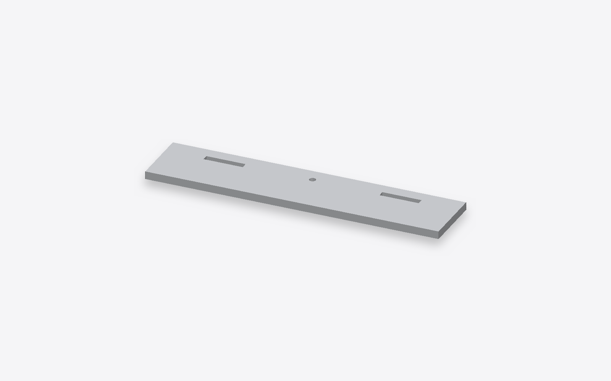
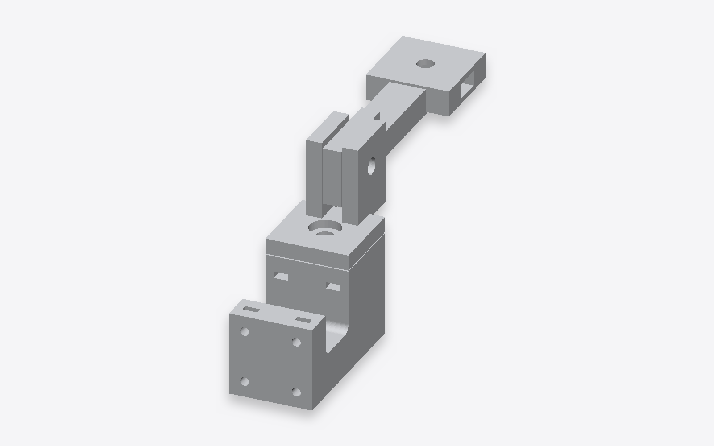
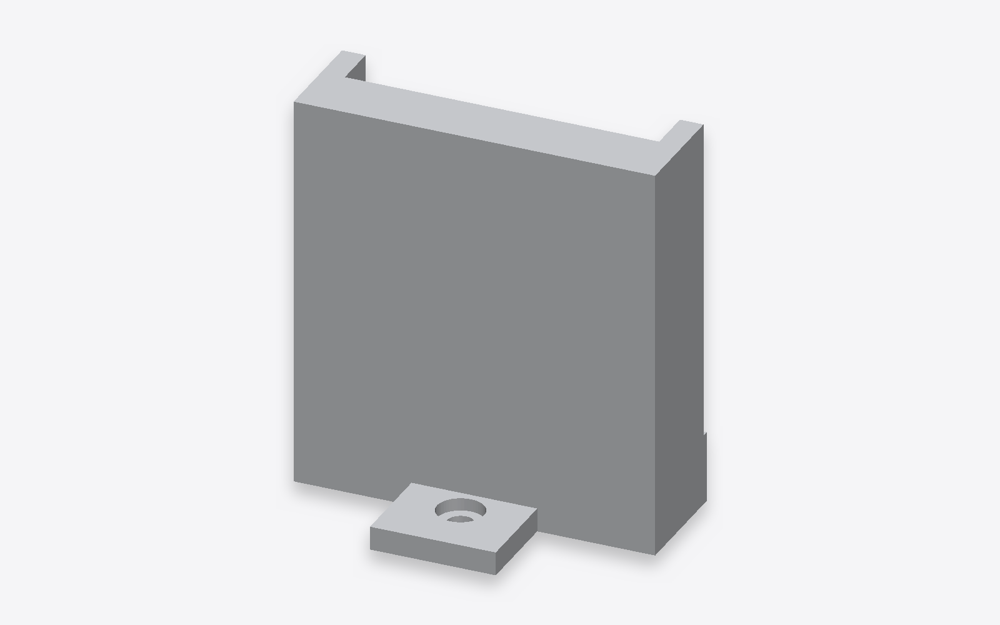
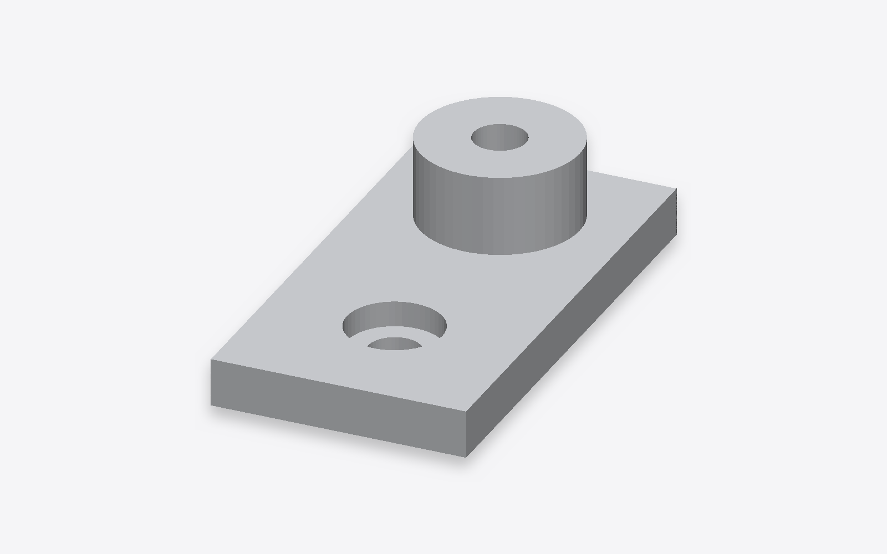
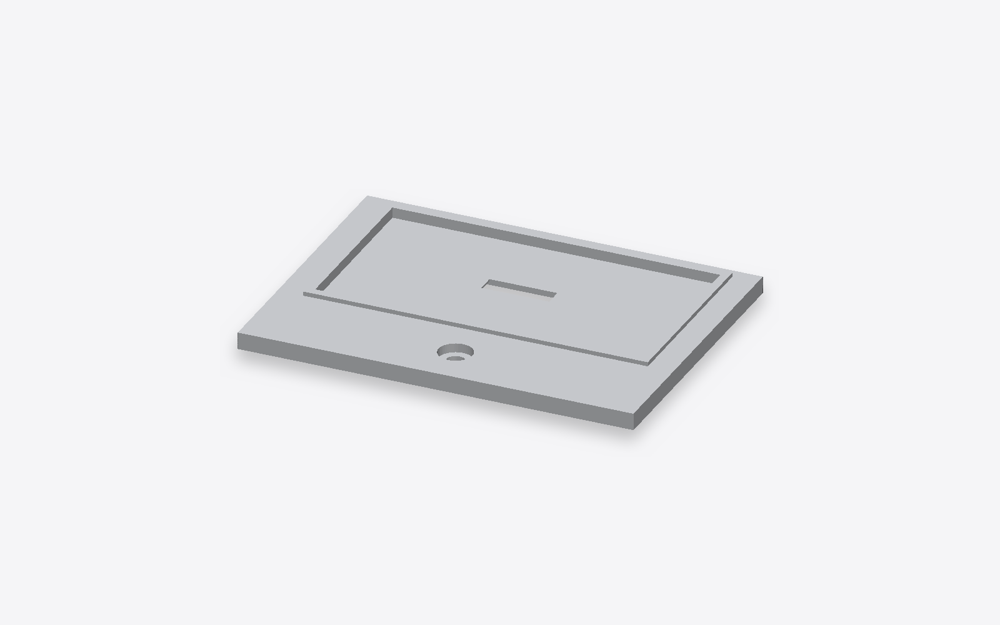
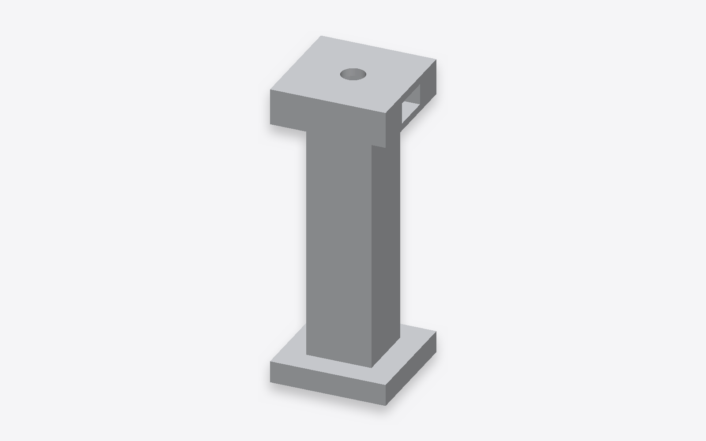

Behind the monitor.
Three cameras on one plate. Two hinges. One 1/4-inch screw into the clamp.

- 3cameras
- 2hinges
- 1/4"each screw
One screw from below.
The center hole is fixed. Each side slot moves that camera from 70 to 110 mm away. The screw goes up into the camera. A second screw, at the back, holds the plate.

One hinge, or two.
The base and the link are one hinge. The mid link makes two. An M6 bolt is the axle. The knob and the washers are bought.

The phone leans back.
The cradle is about 80 mm wide. The phone sticks out the top. The foot uses the same 1/4-inch screw as the plate.

Buy the buckle.
Print the foot, not the prongs. A 1/4-inch screw drops into the boss and the buckle threads onto it.

One ZV-E10.
The body is 115.2 mm wide, so it does not share the three-camera plate. The socket position is unpublished. The screw sits in a slot.

Or skip the arm.
The post raises the same 32 mm face. A ball head you already own bolts to that screw.

Specs
- Column
- 40.2 mm wide, 55.5 mm deep. A TPU band in two halves is the clamp. The ribs still cut into the column, so do not print the band yet.
- Foot
- Four M3 nuts on a 20 mm square, and one 1/4"-20 nut in the center. Bolts enter from above.
- Plate
- 300 × 64 × 8 mm, PETG. Center hole, two slots, one mounting hole at the back.
- Hinges
- M6 clearance, 6.6 mm. Steel washers. The tooth lock is bought, not printed.
- Pictures
- Shaded from the STL meshes. Not photographs, and not a printed fit.